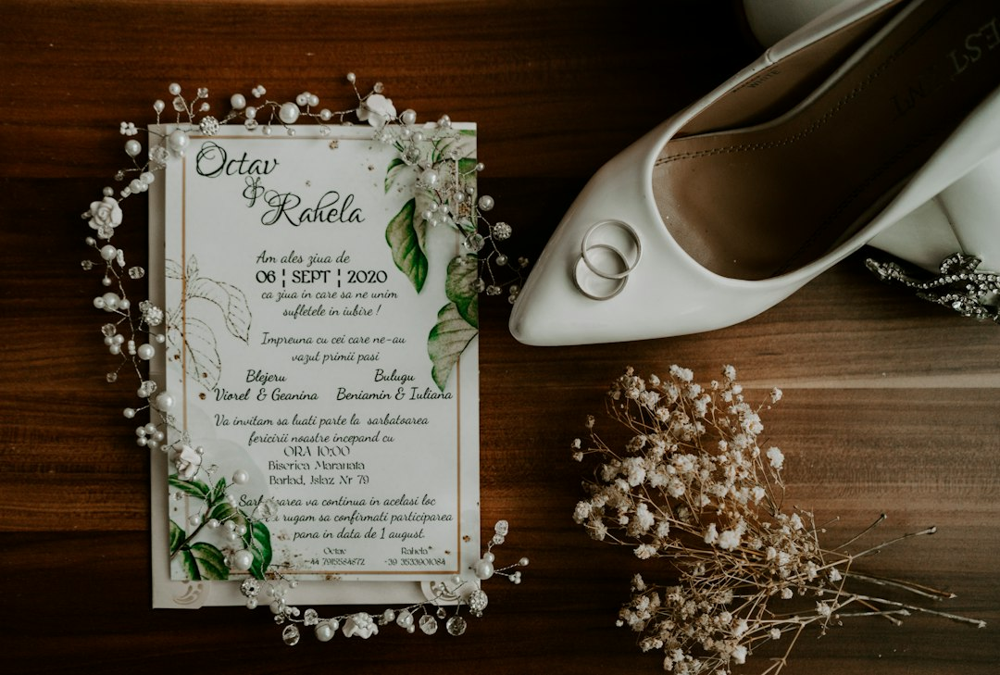

Automazione Digitale per Wedding Planner: Superare il Gap Competitivo con LOVE Partecipazioni Digitali

Automazione Digitale per Wedding Planner: Superare il Gap Competitivo con LOVE Partecipazioni Digitali
- Il sistema tradizionale di gestione partecipazioni e intolleranze è costoso e inefficiente.
- Il caos operativo genera errori, sprechi e perdita di competitività per Wedding Planner e agenzie.
- LOVE Partecipazioni Digitali ottimizza gestione RSVP, personalizza inviti e facilita la comunicazione con catering, riducendo tempi e costi.
Analisi Approfondita della Notizia e delle Implicazioni Operative
Nel settore del wedding planning e delle agenzie eventi, la gestione delle partecipazioni e delle preferenze alimentari degli invitati rappresenta una fase critica e delicata. Tradizionalmente, le partecipazioni stampate su carta e la raccolta manuale delle risposte per menu e intolleranze creano uno scenario complesso. Spesso le partecipazioni cartacee richiedono una produzione anticipata con costi elevati, limitando la possibilità di personalizzazioni last minute. Inoltre, i metodi manuali per la raccolta delle risposte e la gestione delle intolleranze portano a errori frequenti nella comunicazione con il catering, aumentando il rischio di disservizi durante il ricevimento. Questa situazione si traduce in un elevato dispendio di tempo e risorse, penalizzando la qualità finale dell'evento e la soddisfazione di sposi e clienti.
Le nuove esigenze del mercato spingono quindi verso una digitalizzazione della filiera, capace di integrare design innovativo e tecnologia, ma senza perdere il valore emozionale e culturale tipico delle partecipazioni di nozze. Il gap competitivo tra operatori che si affidano ancora a metodi manuali e quelli che adottano soluzioni digitali sta diventando sempre più netto, con impatti diretti su efficienza e margini di profitto.
Le Conseguenze e i Costi di Non Agire
Ignorare questo divario tecnologico comporta un aggravamento delle problematiche gestionali. Le partecipazioni cartacee non solo hanno un costo fisso elevato (stampa, spedizione, eventuali ristampe), ma generano anche sprechi ambientali e di materiale. La comunicazione delle intolleranze raccolte con moduli cartacei o email dispersive espone a rischi di errori nella trasmissione delle informazioni al catering, con il concretizzarsi di disguidi e insoddisfazioni.
Dal punto di vista operativo, la doppia gestione analogica rallenta l’intero processo organizzativo, sottraendo tempo ai wedding planner che potrebbero invece dedicarsi alla progettazione creativa e personalizzata dell’evento. In più, il rischio di perdere commesse o soprattuto la fiducia degli sposi cresce in un mercato sempre più competitivo, dove l’innovazione digitale viene percepita dal cliente come segno distintivo di professionalità e attenzione al dettaglio.
Come LOVE Partecipazioni Digitali Risolve il Problema
LOVE Partecipazioni Digitali di RM Studio si propone come la soluzione tecnologica per colmare il gap competitivo nel wedding planning grazie a funzionalità progettate specificamente per il settore:
- Partecipazioni digitali d'autore con apertura 3D: un design elegante e innovativo che consente di catturare l’attenzione degli invitati con un’esperienza visiva unica, valorizzando l’emozione del momento.
- Monogram Studio AI: uno strumento di personalizzazione intelligente che permette di creare monogrammi esclusivi e coerenti con il leitmotiv del matrimonio, ottimizzando tempi e creatività.
- Gestione RSVP e intolleranze integrata: raccolta immediata e automatizzata delle conferme di partecipazione e delle preferenze alimentari. L’export Excel dedicato per chef e catering rende la comunicazione semplice e precisa.
- Spedizione WhatsApp 1-Tap: invio rapido e diretto delle partecipazioni digitali tramite cellulare, riducendo costi postali ed evitando sprechi.
Questi elementi combinati costituiscono un ecosistema efficiente, user-friendly e scalabile, in grado di garantire una gestione fluida anche per agenzie multi-evento grazie al Pannello Agency Hub B2B.
| Gestione Tradizionale | Con LOVE Partecipazioni Digitali |
|---|---|
| Alti costi di stampa e spedizione cartacea. | Risparmio grazie all’invio digitale diretto via WhatsApp 1-Tap. |
| Raccolta manuale e disorganizzata delle RSVP e intolleranze. | Gestione automatizzata con export Excel per catering, preciso e veloce. |
| Design statico e poco coinvolgente. | Partecipazioni con apertura 3D e Monogram Studio AI personalizzabile. |
| Elevata probabilità di errori e ritardi. | Processi snelli, riduzione del margine di errore e comunicazione diretta con catering. |
| Tempi di gestione lunghi e rigidità organizzativa. | Workflow digitale flessibile e scalabile, ideale per agenzie e planner multitasking. |
💡 Ti è stato utile questo approfondimento?
Condividilo con un collega o un amico del settore Wedding Planner, Agenzie Eventi e Sposi a cui potrebbe interessare!
FAQ per Professionisti Wedding Planner e Agenzie Eventi
1. Come garantisce sicurezza e privacy la piattaforma LOVE Partecipazioni Digitali?
LOVE utilizza protocolli di crittografia avanzata per proteggere dati personali e preferenze degli invitati, assicurando conformità con le normative GDPR.
2. È possibile integrare LOVE con altri software gestionali già in uso?
Sì, LOVE offre esportazioni in formato Excel facilmente integrabili con i principali software di gestione eventi, semplificando il coordinamento operativo.
3. Quanto è semplice per gli sposi utilizzare LOVE per personalizzare le partecipazioni?
La piattaforma è stata progettata con un’interfaccia intuitiva che accompagna lo sposo passo dopo passo, facilitando la creazione di partecipazioni digitali personalizzate senza necessità di competenze tecniche approfondite.
Inizia Subito
Licenza Sposi da €149 o Pannello Agency Hub B2B a €490 per 10 matrimoni.
Fonti Ufficiali e Risorse Esterne
Scopri l'Intelligenza Artificiale per la tua attività
Ottimizza i processi e aumenta le vendite con le soluzioni B2B di RM Studio.
Scopri LOVE Partecipazioni Digitali